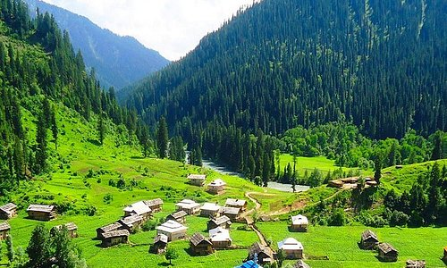
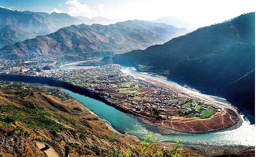

The city of Pakistan :
Muzaffarabad is the capital and largest city of Azad Kashmir, and the 60th largest in Pakistan. The city is located in Muzaffarabad District, near the confluence of the Jhelum and Neelum rivers.The capital of the Azad Jammu & Kashmir is situated at the confluence of the Jhelum & Neelum rivers. It is 138 kms from Rawalpindi and about 76 kms from Abbottabad. The present name of Muzaffarabad has been given to it after the denomination of Sultan Muzaffar Khan, a chief of Bomba Dynasty (1652). There are two forts, namely, Red & Ebony Fort, situated on the antithesis sides of river Neelum. The Neelum river streams through the town, joins river Jhelum at Domel and plays an ascendant role in the micro climate of Muzaffarabad.Places of interest in and around Muzaffarabad are: Pir Channasi, Shaheed Gali and Patika.
The capital of the Azad Jammu & Kashmir is situated at the confluence of the Jhelum & Neelum rivers. It is 138 kms from Rawalpindi and about 76 kms from Abbottabad. The present name of Muzaffarabad has been given to it after the denomination of Sultan Muzaffar Khan, a chief of Bomba Dynasty (1652). There are two forts, namely, Red & Ebony Fort, situated on the antithesis sides of river Neelum. The Neelum river streams through the town, joins river Jhelum at Domel and plays an ascendant role in the micro climate of Muzaffarabad.Places of interest in and around Muzaffarabad are: Pir Channasi, Shaheed Gali and Patika.
Muzaffarabad FortThere are two historical forts on opposite sides of the Neelum River. Red Fort and Black Fort The construction of the Red Fort was finally completed in 1646 by Sultan Muzaffar Khan, the founder of Muzaffarabad city. After the Mughals took over Kashmir, the fort lost its importance. The Mughals were more interested in Kabul, Bukhara, and Badakshan. During the period of Durrani rule, however, the fort again once again assumed its importance. Maharaja Gulab Singh and Rambir Singh, the Dogra rulers, reconstructed and extended the fort for their political and military operations. Towards the middle of 1947, the Dogra forces left, leaving the fort abandoned. The architecture of the fort shows that great experts in design and structure participated in its construction. It is surrounded on three sides by theNeelum River formally known as the Kishenganga River. The northern part of the fort had terraces with steps leading to the bank of the river. The eastern side was very well protected from the hazards of flood waters, but some parts on the north side have suffered damage. There used to be an inn at the entrance to the fort, but only traces of that structure remain now.

The Pearl Continental has Chinese & Continental restaurants (with amazing views). Neelum View Hotel (which is no longer a hotel) has a nice terrace and OK food. Pakistani and Kashmiri food is available everywhere. Many restaurants offer Chinese and Italian dishes as well.
If you are tourist here, please go to some reputed restaurants and ask what is freshly cooked. Chicken Karahi is a dish recommended for Pakistanis and Kashmiris as it can be cooked easily and one can see this being cooked.
Made with By Mr.Haris
Leave a Comment